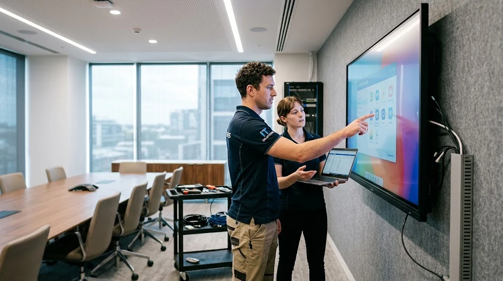

Salah satu klien korporat MAROON ATK di kawasan Segitiga Emas Sudirman Jakarta (nama perusahaan dirahasiakan sesuai kesepakatan kerahasiaan standar proyek) berhasil memasang interactive flat panel berukuran 86 inch di ruang rapat utama, lengkap dengan integrasi Zoom Rooms dan Microsoft Teams untuk mendukung rapat hybrid antara dewan direksi, tim kantor pusat, dan mitra regional.
Apa Latar Belakang Kebutuhan Interactive Flat Panel di Perusahaan Ini?
Perusahaan ini membutuhkan solusi ruang rapat yang mampu mendukung presentasi visual besar sekaligus rapat hybrid, mengingat sebagian tim bekerja dari kantor dan sebagian lainnya bergabung secara daring melalui Zoom maupun Microsoft Teams.
Sebelumnya, ruang rapat hanya mengandalkan proyektor konvensional yang dirasa kurang optimal untuk kebutuhan kolaborasi interaktif, terutama saat peserta daring perlu melihat detail dokumen atau presentasi secara jelas. Untuk memahami teknologi layar sentuh interaktif lebih dalam, pelajari panduan dasar kami di mengenal papan tulis digital smart board untuk kantor modern.
Mengapa Ukuran 86 Inch Dipilih untuk Ruang Rapat Korporat?
Ukuran 86 inch dipilih karena ruang rapat berkapasitas besar membutuhkan layar yang tetap terbaca jelas dari jarak duduk terjauh peserta rapat, terutama pada ruangan dengan konfigurasi meja panjang yang menampung banyak peserta sekaligus.
Selain faktor jarak pandang, ukuran ini juga mempertimbangkan proporsi ruangan agar layar tidak terlihat terlalu kecil dibanding luas dinding tempat perangkat dipasang, memberikan kesan representatif dan prestisius saat menjamu klien penting.

Bagaimana Proses Instalasi dan Integrasi dengan Zoom serta Microsoft Teams?
Proses instalasi diawali dengan survei kondisi ruangan untuk menentukan titik pemasangan yang optimal, dilanjutkan dengan pemasangan perangkat dan konfigurasi integrasi ke sistem video conference yang sudah digunakan perusahaan.
Tahap Survei dan Persiapan Ruangan
Tim teknis melakukan survei untuk memastikan ketersediaan jalur listrik, jaringan internet kabel (LAN) berkecepatan tinggi, serta posisi pemasangan bracket dinding yang sesuai dengan tata letak meja rapat, sehingga seluruh peserta dapat melihat layar dengan nyaman dari berbagai sudut ruangan.
Konfigurasi Integrasi Video Conference
Setelah perangkat terpasang dengan kuat, tahap berikutnya adalah konfigurasi integrasi dengan aplikasi Zoom dan Microsoft Teams, termasuk pengaturan kamera 4K bawaan, mikrofon omnidirectional dengan peredam bising (noise cancelling), dan speaker agar peserta daring dapat berinteraksi dengan lancar bersama peserta yang hadir langsung di ruangan.
Apa Hasil dan Manfaat yang Dirasakan Setelah Instalasi?
Setelah instalasi selesai, tim IT perusahaan melaporkan proses rapat hybrid menjadi jauh lebih lancar karena peserta daring dapat melihat materi presentasi dengan kontras dan resolusi 4K yang tajam dibanding menggunakan proyektor konvensional sebelumnya.
Selain itu, fitur anotasi digital langsung pada layar membantu tim mendiskusikan dokumen teknis, spreadsheet keuangan, dan grafik secara real-time tanpa perlu berpindah ke aplikasi berbagi layar terpisah, sehingga alur rapat menjadi lebih efisien dan produktif.
Bagaimana Memilih Vendor Interactive Flat Panel yang Tepat di Indonesia?
Memilih vendor interactive flat panel yang tepat memerlukan perhatian pada pengalaman instalasi korporat, kemampuan dukungan teknis pasca-pemasangan, serta rekam jejak dalam mengintegrasikan perangkat dengan sistem video conference yang umum digunakan perusahaan.
MAROON ATK berpengalaman menyuplai kebutuhan teknologi kantor termasuk interactive flat panel ke lebih dari 150 instansi pemerintah dan perusahaan swasta di Jabodetabek dengan keakuratan pengiriman barang mencapai 99,8 persen (data internal Maroon ATK, 2026), sehingga proses pengadaan hingga instalasi dapat berjalan lancar sesuai jadwal yang direncanakan.
Kesimpulan
- Pilih ukuran ideal: Pertimbangkan ukuran layar interactive flat panel (65", 75", atau 86") berdasarkan kapasitas ruangan dan jarak pandang audiens.
- Wajibkan survei lokasi: Pastikan proses instalasi diawali dengan survei ruangan dan kesiapan struktur dinding sebelum pemasangan bracket.
- Integrasi mulus: Konfigurasikan integrasi native dengan Zoom Rooms dan Microsoft Teams sesuai kebutuhan rapat hybrid korporat.
- Pilih vendor teruji: Prioritaskan vendor dengan portofolio korporat terbukti dan ketersediaan garansi purna jual resmi di Indonesia.
- Konsultasikan segera: Hubungi Maroon ATK untuk konsultasi dan jadwal demo produk interactive flat panel di ruang rapat Anda.
Pertanyaan yang Sering Diajukan (FAQ)
Ukuran 86 inch dipilih karena ruang rapat berkapasitas besar membutuhkan layar yang tetap terbaca jelas dari jarak duduk terjauh peserta rapat.
Sebagian besar interactive flat panel modern mendukung integrasi dengan aplikasi video conference seperti Zoom dan Microsoft Teams melalui koneksi kabel maupun aplikasi bawaan, tergantung spesifikasi perangkat.
Lama proses instalasi dapat bervariasi tergantung kondisi ruangan dan kompleksitas integrasi perangkat, sehingga sebaiknya dikoordinasikan langsung dengan tim vendor.
Perhatikan pengalaman vendor dalam instalasi korporat, dukungan teknis pasca-pemasangan, serta kemampuan vendor mengintegrasikan perangkat dengan sistem video conference yang sudah digunakan perusahaan.
Maroon ATK menyediakan layanan instalasi interactive flat panel beserta konsultasi integrasi dengan aplikasi video conference yang digunakan klien korporat melalui WhatsApp resmi MAROON ATK di 0889-8964-3555.

Ridhan Fahri
Spesialis implementasi teknologi display cerdas, Interactive Flat Panel (IFP), dan integrasi ruang pertemuan hybrid di MAROON ATK. Telah menangani ratusan proyek instalasi ruang rapat korporat dan smart classroom modern.